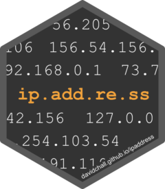

ipaddress 
ipaddress provides data classes and functions for working with IP addresses and networks. Its interface is inspired by the Python ipaddress module.
Here are some of the features:
- Functions for generation and analysis of IP data
- Full support for both IPv4 and IPv6 address spaces
- Memory footprint: data stored in native format
- Performance: calculations performed in C++
- Compatible with the tidyverse
For data visualization of IP addresses and networks, check out the ggip package.
Installation
You can install the released version of ipaddress from CRAN with:
install.packages("ipaddress")Or you can install the development version from GitHub:
# install.packages("remotes")
remotes::install_github("davidchall/ipaddress")Usage
Use ip_address() and ip_network() vectors either standalone or as columns in a data frame.
library(dplyr)
library(ipaddress)
tibble(
address = ip_address(c("192.168.0.1", "2001:db8::8a2e:370:7334")),
network = ip_network(c("192.168.100.0/22", "2001:db8::/80"))
)
#> # A tibble: 2 × 2
#> address network
#> <ip_addr> <ip_netwk>
#> 1 192.168.0.1 192.168.100.0/22
#> 2 2001:db8::8a2e:370:7334 2001:db8::/80Input character vectors are validated as they are parsed. Invalid inputs raise a warning and are replaced with NA.
ip_address(c("255.255.255.255", "255.255.255.256"))
#> Warning: Problem on row 2: 255.255.255.256
#> <ip_address[2]>
#> [1] 255.255.255.255 <NA>A variety of functions are provided to enable common tasks.
tibble(network = ip_network(c("192.168.100.0/22", "2001:db8::/80"))) %>%
mutate(
first = network_address(network),
last = broadcast_address(network),
ipv6 = is_ipv6(network)
)
#> # A tibble: 2 × 4
#> network first last ipv6
#> <ip_netwk> <ip_addr> <ip_addr> <lgl>
#> 1 192.168.100.0/22 192.168.100.0 192.168.103.255 FALSE
#> 2 2001:db8::/80 2001:db8:: 2001:db8::ffff:ffff:ffff TRUERelated work
- iptools – A well established R package for working with IP addresses and networks. Unfortunately IPv6 support is severely limited. Also, addresses and networks are stored as character vectors, so they must be parsed to their native bit representation for every operation. It served as an excellent guide and motivation for ipaddress.
- cyberpandas – A Python package for using IP addresses in a pandas DataFrame. This offers full support for IPv6 and stores addresses in the native bit representation. However, most “interesting” operations must deserialize each address to a Python ipaddress object, which is slow. It also doesn’t support IP networks.
Please note that the ipaddress project is released with a Contributor Code of Conduct. By contributing to this project, you agree to abide by its terms.